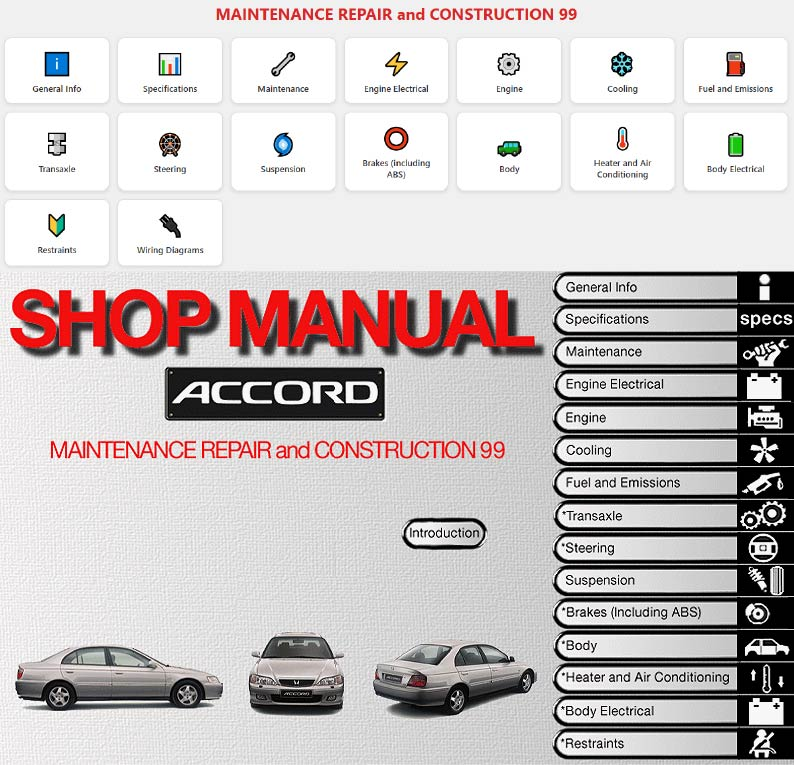

Digitization of the official Honda ESM service manual (Accord 1998) transforming obsolete Windows-only software into a modern, responsive Progressive Web App accessible from any device
This is a personal project currently in development, born from my passion for automobiles. I own a Honda Accord Type R CH1 from the year 2000, an exclusive model manufactured only in Swindon (United Kingdom) for the European market with very limited production. It's a vehicle I like to keep in 100% original condition, without any modifications, and this preservation philosophy is what led me to want to rescue its official technical documentation from digital obsolescence.
The official Honda Electronic Service Manual (Honda ESM v1.4.0) was distributed as Windows-only software, using proprietary .CAB files that cannot be extracted with conventional tools. Over the years, this software has become obsolete and incompatible with current operating systems, making an essential technical resource for vehicle maintenance virtually inaccessible. No alternative digital version exists that offers this content in a modern and accessible way.
Rescue all technical content from the original Honda ESM (over 100 technical diagrams and images including engine diagrams, electrical schematics, and body plans) and convert it into a Progressive Web App (PWA) that can be installed on any device, works offline, and offers a modern, responsive browsing experience. The ultimate goal is to have the workshop manual always accessible from a phone, even in the garage without internet connection.
Primarily for personal use in maintaining my own vehicle, but also potentially useful for the Honda Accord Type R owners' community — a small but passionate group of enthusiasts who value originality and proper maintenance of these increasingly rare vehicles.
The starting point was the original Honda ESM v1.4.0 software, a Windows-only program that stores all its content in proprietary files impossible to extract with conventional tools. This meant that the only way to rescue the content was a completely manual process: capturing the original software's screens one by one, cataloging each image, documenting each section, and mapping the entire navigation structure. The program's internal folders were analyzed, identifying and extracting over 100 technical images so far — including engine diagrams, electrical schematics, and body plans — although the original manual contains hundreds more that will be incorporated progressively.
The main challenge was faithfully recreating a very complex information architecture, built entirely by hand. The original manual is structured into 16 main sections (from general information, specifications, and maintenance to engine, brakes, suspension, body, electrical system, and wiring diagrams), which in turn break down into over 200 subsections with their respective detail pages. This entire hierarchy was mapped and organized manually to replicate the navigation experience of the original software. Visually, Honda's corporate colors (red and black) were adopted to maintain brand identity, and an interface was designed with navigation cards, breadcrumbs, and a search system that allows quickly locating any procedure within this extensive structure.
The biggest challenge was the scale of the manual work: in the current phase alone, over 100 technical images have been cataloged, captured, and organized, linked to more than 200 subsections, and the original manual contains hundreds of additional images yet to be digitized. Any error in assigning an image to its corresponding section could lead a mechanic to consult an incorrect procedure, so the verification process was thorough. Additionally, making an application with this volume of content (which will continue to grow) run smoothly on a mobile phone, even without internet connection inside a garage, required carefully optimizing image loading and section navigation. This project is in active development, progressively expanding sections with complete content.
Base languages for building the application's structure and visual appearance, allowing it to adapt to any screen size so that technical diagrams can be read correctly on both a phone and a computer.
Responsible for all application interactivity: navigation between sections, the search system, progressive image loading, and the ability to use the manual without internet connection.
Tools like Photoshop were used for processing and optimizing the manual's images, reducing their file size so the application loads quickly on mobile devices without losing the quality needed to correctly read technical diagrams.
Adaptive design that allows consulting engine diagrams, electrical schematics, and body plans from a phone in the garage or on a large screen to study more complex procedures in greater detail.